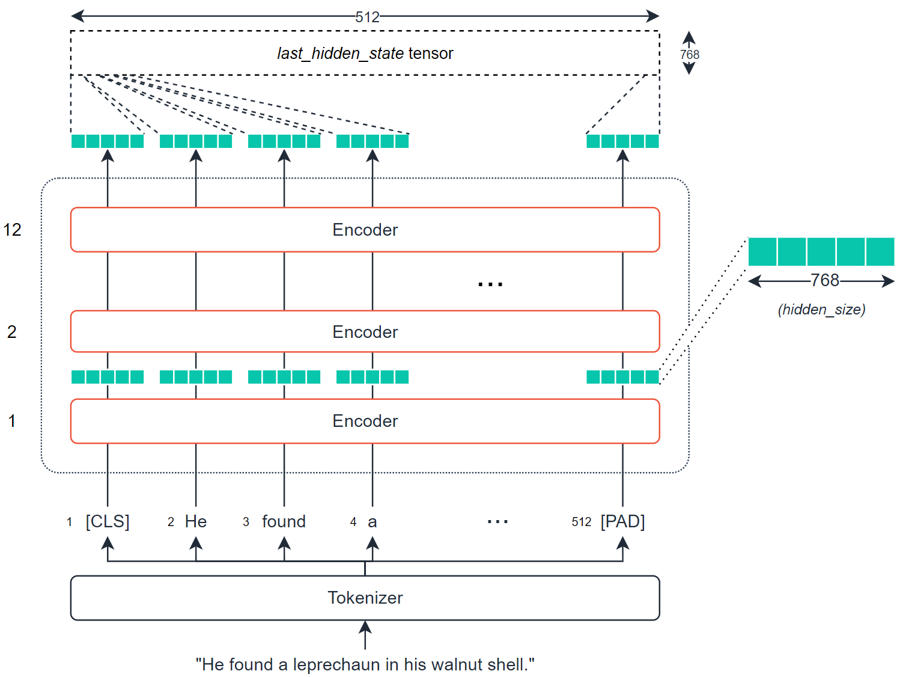
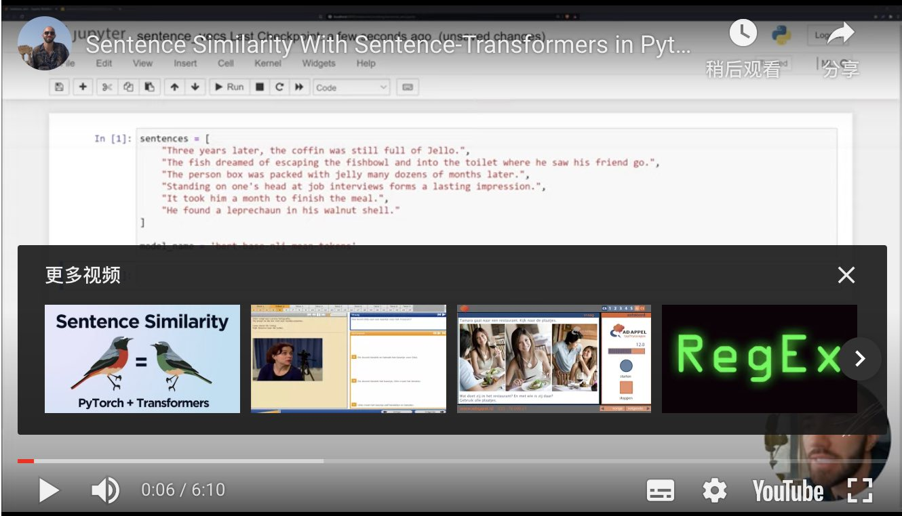
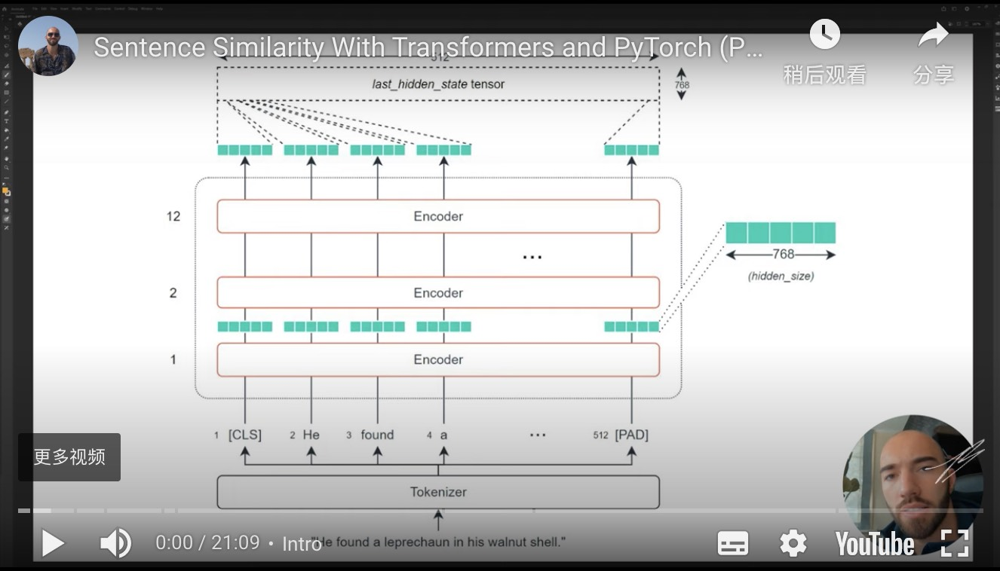

BERT用于计算句子文本相似度
这篇文章将是关于BERT和序列相似性的!
NLP的很大一部分是依靠高维空间的相似性。通常情况下，NLP解决方案将一些文本处理以创建一个代表所述文本的大矢量/数组 - 然后执行几个转换。
这是一个高维的魔法。句子相似性是一个最明显的例子，说明了高维魔法可以有多强大。
其逻辑是这样的:
- 取一个句子，把它转换成一个矢量。
- 拿出许多其他的句子，并把它们转换成向量。
- 找出它们之间距离最小（欧几里得）或角度最小（余弦相似度）的句子--这里有更多介绍。
- 我们现在有了一个衡量句子之间语义相似性的方法--很简单！在高层次上，没有什么其他的东西。
在高层次上，没有什么其他的东西了。但是，我们当然想更详细地了解正在发生的事情，并在Python中实现它！
为什么BERT有用
正如我们已经提到的，BERT是NLP的MVP。这其中很大一部分归功于BERT将词语的含义嵌入到密集向量中的能力。
我们称其为密集向量，因为向量中的每个值都有一个值，并且有成为该值的原因--这与稀疏向量相反，例如 one-hot 编码向量，其中大多数值为0。
BERT很擅长创建这些密集向量，每个编码器层（有几个）都会输出一组密集向量。

对于BERT基础，这将是一个包含768的向量。这768个值包含我们对单个标记的数字表示--我们可以将其作为上下文词嵌入。
因为每个符号都有一个这样的向量（由每个编码器输出），所以我们实际上看到的是一个大小为768的张量，即符号的数量。
我们可以利用这些张量--并对它们进行转换，以创建输入序列的语义表示。然后，我们可以采取我们的相似度量，计算不同序列之间各自的相似度。
最简单和最常见的提取的张量是last_hidden_state张量--它是由BERT模型方便地输出的。
当然，这是一个相当大的张量--在512x768--我们希望有一个矢量来应用我们的相似性措施。
要做到这一点，我们需要将我们的last_hidden_states张量转换为768维的向量。
创建矢量
为了将last_hidden_states张量转换为我们的向量--我们使用了一个平均池操作。
这512个标记中的每一个都有各自的768个值。这个池化操作将采取所有标记嵌入的平均值，并将它们压缩到一个单一的768向量空间中--创建一个 "句子向量"。同时，我们不能只取平均激活的原样。我们需要考虑空的填充标记（我们不应该包括这些标记）。
代码
这在很大程度上取决于这个过程背后的理论和逻辑——但我们如何在现实中应用这一点呢？
我们将概述两种方法-简单的方法和稍微复杂的方式。
我们实现我们刚刚覆盖的所有内容的最简单方法是通过 sentence-transformers 库-它将此过程的大部分内容包装成几行代码。
首先，我们使用句子Transformer pip install sentence-transformers 安装。
这个库在幕后使用 HuggingFace 的Transformer， 所以我们实际上可以 在这里找到句子Transformer模型。

我们将利用这个 [bert-base-nli-mean-tokens](https://huggingface.co/sentence-transformers/bert-base-nli-mean-tokens) 模型——它实现了我们迄今为止讨论过的逻辑。
(它也使用128个输入标记，而不是512个)。
让我们创建一些句子，初始化我们的模型，并编码句子：
1
2
3
4
5
6
7
8
9
10
11
12
13
14
15
16
17 | sentences = [
"Three years later, the coffin was still full of Jello.",
"The fish dreamed of escaping the fishbowl and into the toilet where he saw his friend go.",
"The person box was packed with jelly many dozens of months later.",
"He found a leprechaun in his walnut shell."
]
# Initialize our model:
from sentence_transformers import SentenceTransformer
model = SentenceTransformer('bert-base-nli-mean-tokens')
# HBox(children=(HTML(value=''), FloatProgress(value=0.0, max=405234788.0), HTML(value='')))
# Encode the sentences:
sentence_embeddings = model.encode(sentences)
sentence_embeddings.shape
## Out[5]: (4, 768)
|
太好了，我们现在有四个句子嵌入-每个包含768值。
现在，我们要做的是采取这些嵌入，并找到每个之间的舒适相似性。因此，对于句子0：
Three years later, the coffin was still full of Jello.
我们可以用以下方式找到最相似的句子:
| from sklearn.metrics.pairwise import cosine_similarity
# Let's calculate cosine similarity for sentence 0:
cosine_similarity(
[sentence_embeddings[0]],
sentence_embeddings[1:]
)
## Out[14]: array([[0.33088642, 0.7218851 , 0.55473834]], dtype=float32)
|
这些相似翻译为：
| Index |
句子 |
相似性 |
| 1 |
"The fish dreamed of escaping the fishbowl and into the toilet where he saw his friend go." |
0.3309 |
| 2 |
"The person box was packed with jelly many dozens of months later." |
0.7219 |
| 3 |
"He found a leprechaun in his walnut shell." |
0.5547 |
现在，这是一个更容易--更抽象的方法。七行代码来比较我们的句子。
在进入第二种方法之前，值得注意的是，它与第一种方法所做的事情是一样的--但要低一个层次。
通过这种方法，我们需要对last_hidden_state进行自己的转换，以创建句子嵌入。为此，我们进行了平均池化(mean pooling)操作。

此外，在 mean pooling 操作之前，我们需要创建last_hidden_state，我们这样做：
1
2
3
4
5
6
7
8
9
10
11
12
13
14
15
16
17
18
19
20
21
22
23
24
25
26
27
28
29
30
31
32
33
34
35
36
37
38
39
40
41
42 | from transformers import AutoTokenizer, AutoModel
import torch
# First we initialize our model and tokenizer:
tokenizer = AutoTokenizer.from_pretrained('sentence-transformers/bert-base-nli-mean-tokens')
model = AutoModel.from_pretrained('sentence-transformers/bert-base-nli-mean-tokens')
# Then we tokenize the sentences just as before:
sentences = [
"Three years later, the coffin was still full of Jello.",
"The fish dreamed of escaping the fishbowl and into the toilet where he saw his friend go.",
"The person box was packed with jelly many dozens of months later.",
"He found a leprechaun in his walnut shell."
]
# initialize dictionary to store tokenized sentences
tokens = {'input_ids': [], 'attention_mask': []}
for sentence in sentences:
# encode each sentence and append to dictionary
new_tokens = tokenizer.encode_plus(sentence, max_length=128,
truncation=True, padding='max_length',
return_tensors='pt')
tokens['input_ids'].append(new_tokens['input_ids'][0])
tokens['attention_mask'].append(new_tokens['attention_mask'][0])
# reformat list of tensors into single tensor
tokens['input_ids'] = torch.stack(tokens['input_ids'])
tokens['attention_mask'] = torch.stack(tokens['attention_mask'])
# We process these tokens through our model:
outputs = model(**tokens)
outputs.keys()
## Out[4]: odict_keys(['last_hidden_state', 'pooler_output'])
# The dense vector representations of our text are contained within the outputs 'last_hidden_state' tensor, which we access like so:
embeddings = outputs.last_hidden_state
embeddings
embeddings.shape
## Out[6]: torch.Size([4, 128, 768])
|
在我们生成了密集的向量后 embeddings ，我们需要执行平均池化操作，以创建单个矢量编码（ 句子嵌入 ）。
为了进行这种平均池化操作，我们将需要把我们的embeddings张量中的每个值都乘以其各自的attention_mask值--这样我们就可以忽略非真实的标记。
1
2
3
4
5
6
7
8
9
10
11
12
13
14
15
16
17
18
19
20
21
22
23
24
25
26
27
28
29
30
31
32
33
34
35 | # To perform this operation, we first resize our attention_mask tensor:
attention_mask = tokens['attention_mask']
attention_mask.shape
## Out[7]: torch.Size([4, 128])
mask = attention_mask.unsqueeze(-1).expand(embeddings.size()).float()
mask.shape
## Out[8]: torch.Size([4, 128, 768])
mask
#Each vector above represents a single token attention mask - each token now has a vector of size 768 representing it's attention_mask status. Then we multiply the two tensors to apply the attention mask:
masked_embeddings = embeddings * mask
masked_embeddings.shape
## Out[11]: torch.Size([4, 128, 768])
masked_embeddings
# Then we sum the remained of the embeddings along axis 1:
summed = torch.sum(masked_embeddings, 1)
summed.shape
## Out[13]: torch.Size([4, 768])
# Then sum the number of values that must be given attention in each position of the tensor:
summed_mask = torch.clamp(mask.sum(1), min=1e-9)
summed_mask.shape
## Out[14]: torch.Size([4, 768])
summed_mask
# Finally, we calculate the mean as the sum of the embedding activations summed divided by the number of values that should be given attention in each position summed_mask:
mean_pooled = summed / summed_mask
mean_pooled
|
一旦我们有了密集向量，我们就可以计算每个向量之间的余弦相似度--这与我们之前使用的逻辑相同:
1
2
3
4
5
6
7
8
9
10
11
12 | from sklearn.metrics.pairwise import cosine_similarity
#Let's calculate cosine similarity for sentence 0:
# convert from PyTorch tensor to numpy array
mean_pooled = mean_pooled.detach().numpy()
# calculate
cosine_similarity(
[mean_pooled[0]],
mean_pooled[1:]
)
## Out[22]: array([[0.33088905, 0.7219259 , 0.55483633]], dtype=float32)
|
| Index |
Sentence |
Similarity |
| 1 |
"The fish dreamed of escaping the fishbowl and into the toilet where he saw his friend go." |
0.3309 |
| 2 |
"The person box was packed with jelly many dozens of months later." |
0.7219 |
| 3 |
"He found a leprechaun in his walnut shell." |
0.5548 |
我们返回几乎相同的结果--唯一的区别是，索引三的余弦相似度从0.5547移到了0.5548--这是由于四舍五入造成的微小差异。
关于使用BERT测量句子的语义相似性的介绍就到此为止--同时使用句子Transformers和一个低级实现使用PyTorch和Transformers。
你可以在这里和这里找到两种方法的完整笔记本。
我希望你喜欢这篇文章。如果你有任何问题或建议，请通过Twitter中告诉我。如果你对更多这样的内容感兴趣，我也会在YouTube上发布。
凡本网注明"来源：XXX "的文/图/视频等稿件，本网转载出于传递更多信息之目的，并不意味着赞同其观点或证实其内容的真实性。如涉及作品内容、版权和其它问题，请与本网联系，我们将在第一时间删除内容！
作者: James Briggs
来源： https://towardsdatascience.com/bert-for-measuring-text-similarity-eec91c6bf9e1